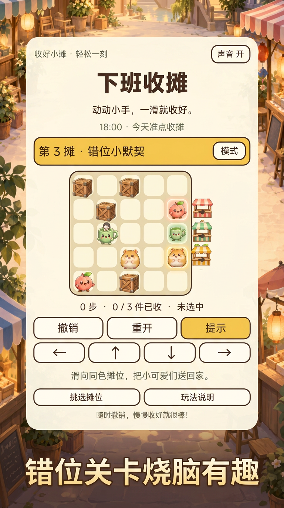
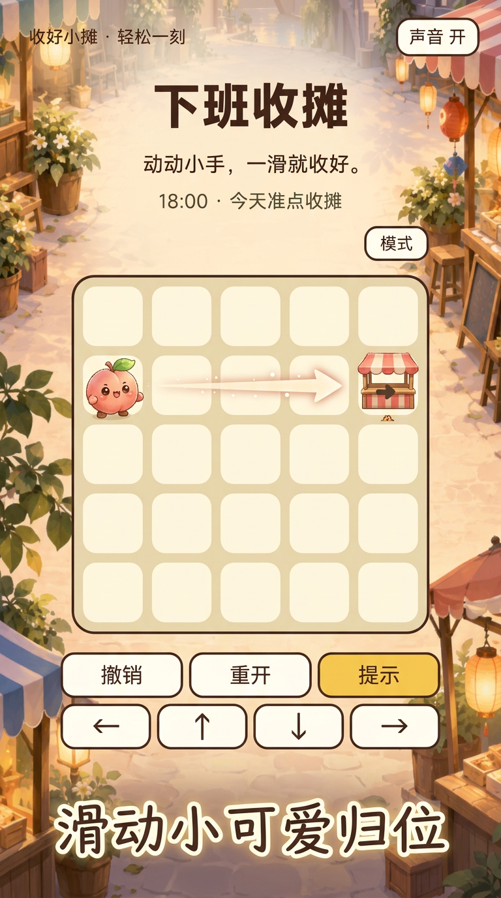
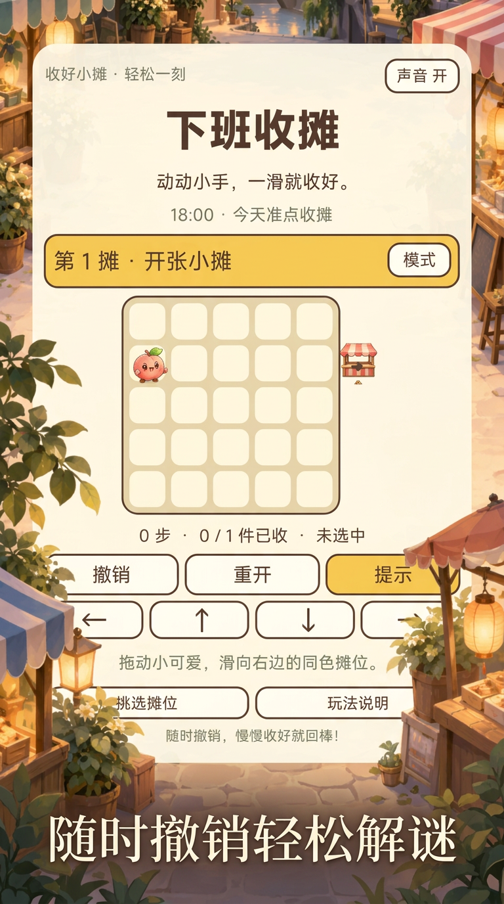

伙伴一挪，原来的落点就变了
先滑过去的伙伴可以给另一位当挡块，也可能堵住原有路线。拖动时的落点预览和随棋局更新的下一步提示，帮你看清现在还有哪些走法。


TAPTAP MAKER / 个人 AI 游戏实践
滑动解谜 / 夜市收纳
夜市打烊了，让桃桃、抹茶和团团回各自的摊位。它们一滑就停不住，得借箱子和伙伴挡一下。谁先走，往往比往哪走更重要。

TapTap 公开测试 · 2026.10.25 核对
按住角色拖出方向，先看路线和落点，松手就沿直线滑到挡住为止。把伙伴送回同色摊位就能收摊。公开介绍列出 30 个休闲关卡和 20 个限时挑战。
展示图来自 2026.10.25 核对的 TapTap 公开游戏页展示图；保留原图，部分含商店宣传文案，不冒充本次重新运行游戏的实机录制。
点击图片可查看原图。

TAPTAP / 游戏入口
打开 TapTap 游戏页，去萤灯夜市试试怎么让伙伴顺利收摊。